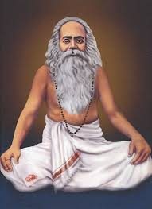

Sri Vidyadhiraja Chattambi Swamikal
Philosopher of Kerala Renaissance (1853-1924)

A Visionary and Reformer
Architect of Social Transformation
Sri Vidyadhiraja Chattambi Swamikal was a great yogi and philosopher who played a decisive role in Kerala's social and spiritual reformation. His contributions to questioning Vedic authority, upholding the Dravidian linguistic tradition, and promoting universal love gave modern Kerala a new sense of direction.
Vision, Mission & Values
Our Vision
To build a compassionate society based on the teachings of Mahaguru Chattambi Swami, where knowledge is accessible to all, equality prevails, and spiritual wisdom guides human endeavor.
Our Mission
To promote social welfare, education, spirituality, and cultural awareness for all, particularly focusing on the welfare of marginalized communities and the preservation of our cultural heritage.
Our Values
Knowledge for all, equality without discrimination, spiritual enlightenment, and social transformation through education and compassion.